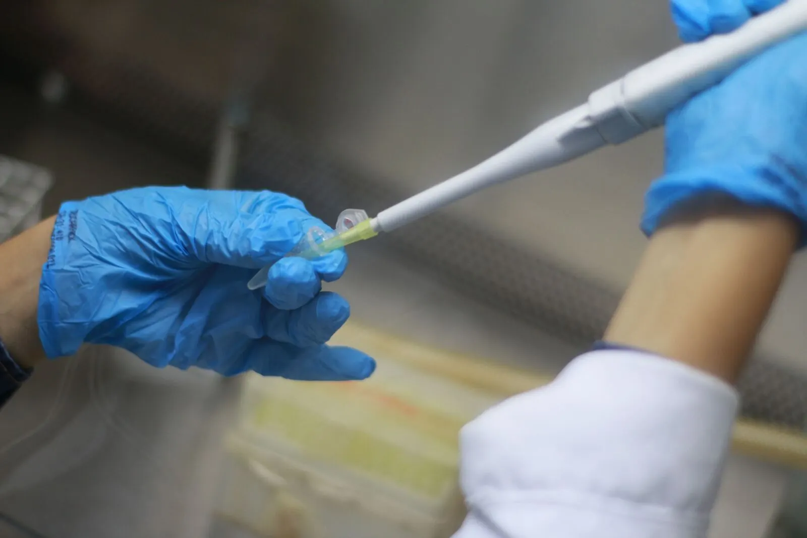
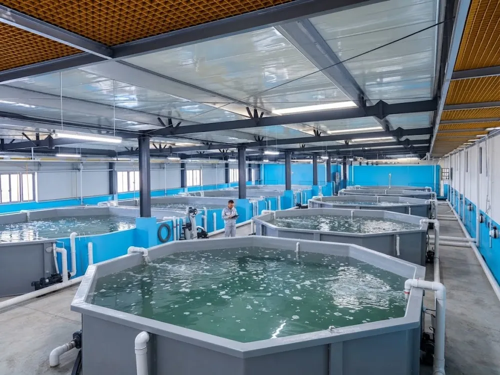
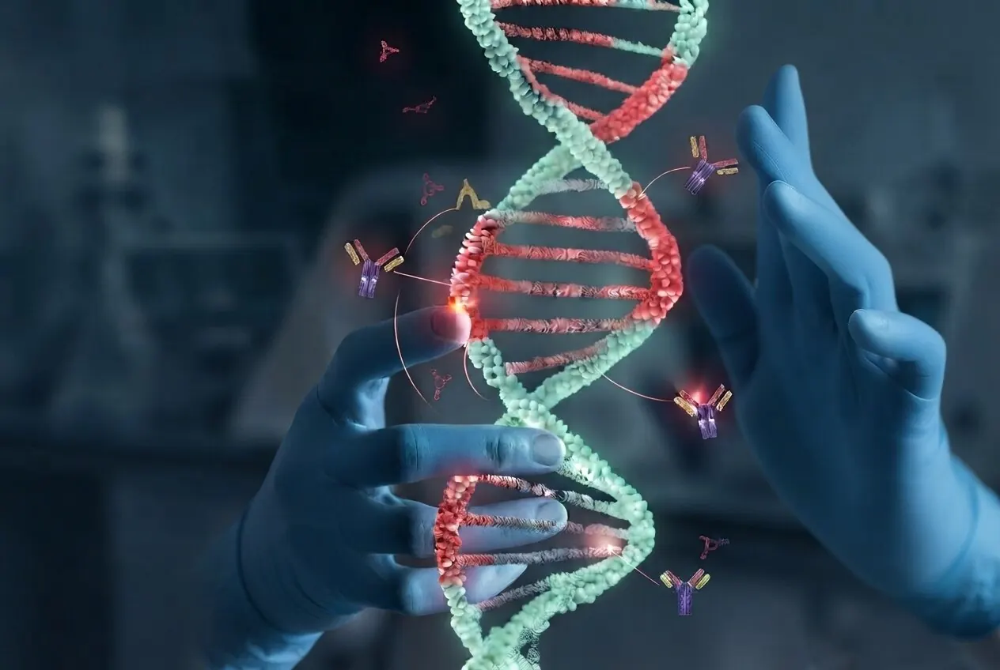
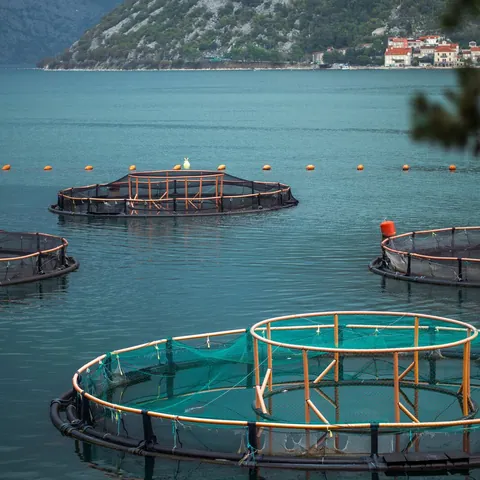
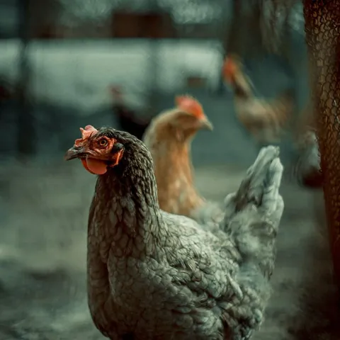
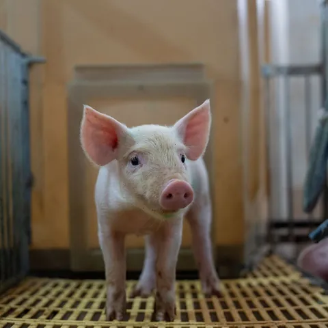

Biotechnology for animal health
Bioactive biomolecules designed to protect the animals that feed the world
Knotide Bio designs, develops and advances biotechnology-based bioactive peptides and proteins for animal health, nutrition and welfare, built to serve the species that anchor global food production: aquaculture, poultry, swine, ruminants and pets.

Real biology, engineered with precision.
Starting point
A well-characterised problem in aquaculture, with urgent regulatory pressure
Shrimp and salmon aquaculture face pathogens for which the available solutions are increasingly ineffective, costly, or prone to resistance over time. Vibrio parahaemolyticus, the causative agent of AHPND (Acute Hepatopancreatic Necrosis Disease), can collapse an entire shrimp pond within 30 days of stocking, with no dominant biotechnological alternative to antibiotics. Sea lice (Lepeophtheirus salmonis, Caligus rogercresseyi) affecting salmon aquaculture present a comparable challenge, and represent the platform's next application.
This is Knotide Bio's entry point: demonstrating, on a real and measurable problem, how a well-engineered biomolecule can replace approaches worn down by resistance and regulatory rejection.

Platform
From biomolecule to product, with scientific rigour at every stage
Knotide Bio explores families of bioactive peptides and proteins as the starting point for designing biotechnological solutions directed at specific targets in animal health.
-
01
Discovery
Bioprospecting and selection of biomolecules with potential activity against identified targets.
-
02
Characterisation
Study of the structure and function of selected molecules, and their mechanism of action.
-
03
Validation
Laboratory assays and analyses confirming activity, selectivity and safety.
-
04
Application
Formulation and integration of validated biomolecules into solutions for animal health, nutrition and welfare.
AI-guided molecular design
Knotide Bio develops small, highly stable biological molecules, bioactive peptides designed with the support of AI-based tools to selectively block critical infection and adhesion steps, without relying on direct toxicity.
This design approach favours precision over broad-spectrum action: molecules are shaped to fit a specific interaction surface, reducing off-target effects and the selective pressure that drives resistance.
Illustrative structural rendering, conceptual and not experimental data. Drag to rotate, scroll or use the buttons to zoom.

Engineering biology at the molecular level.
Applications
Three complementary pillars in animal production
Animal health
Biomolecules directed at parasites and pathogens relevant to animal production, offering an alternative to resistance-prone solutions.
Animal nutrition
Bioactive peptides and proteins applied in nutritional solutions that support animal performance and gut health.
Animal welfare
Solutions that reduce the need for intensive handling and treatment, with direct benefit for animal welfare.
Species the platform is built to serve



In our lead application, a Knotide Bio peptide is designed to neutralise the toxin a pathogen needs to damage its host, rather than relying on broad antimicrobial activity, an approach we are extending to other pathogens, targets and species within the platform.
Knotide Bio's first application case is AHPND in shrimp aquaculture, chosen for its regulatory urgency, market size and a well-characterised molecular target. Sea lice in salmon aquaculture is the platform's second application, sharing the same core mechanism and administration routes already used by the industry.
Services
Beyond in-house development, in service of third parties
Knotide Bio's activity is not limited to developing its own platform. The company also provides specialised services to other biotechnology and life sciences organisations.
-
Research & development
Research, development and commercialisation of biotechnology-based biomolecules, namely bioactive peptides and proteins.
-
Production
Production of biomolecules, either directly or through subcontracting to third parties, depending on project stage and scale.
-
Scientific & technical consultancy
Scientific, technical and technological consultancy in biotechnology and life sciences for third-party organisations.
-
Laboratory testing & validation
Technical and laboratory assays, analyses and validations for the characterisation, development and quality control of biomolecules and biotechnology products.
Team
A multidisciplinary team built around deep scientific expertise and industrial experience
Knotide Bio was founded by three senior researchers with complementary academic and industry backgrounds in molecular microbiology, biochemical engineering and biotechnology.
Our expertise
Biomolecule engineering
- Bioactive molecules
- Molecular engineering
- Protein & peptide science
- Structure–function studies
Discovery & development
- Molecular discovery
- Engineering & optimisation
- Functional evaluation
- R&D strategy
Translational R&D
- Characterisation & validation
- Formulation & development
- Technology development
- Industrial implementation
Innovation & partnerships
- Industrial R&D
- Academic collaborations
- National & EU funding
- Technology commercialisation
Knotide Bio brings together a multidisciplinary founding team with complementary expertise spanning molecular microbiology, biomolecule engineering, biochemical engineering and industrial innovation. The team has experience across the full R&D pathway, from scientific concept and early discovery through development and validation to industrial implementation.
Collectively, the team has led and managed R&D programmes across national and European funding instruments, including FCT, Horizon Europe and COMPETE2020/2030, and brings direct experience translating research into industrial innovation and commercial outcomes.
The founding team maintains strong links with academic and research institutions, including the University of Porto, Coimbra and Algarve and their associated research and innovation ecosystems, as well as collaborations with international academic and industrial organisations. At Knotide Bio, these complementary capabilities converge around a common objective: to engineer and develop bioactive molecules with the potential to generate next-generation solutions for disease prevention and treatment.
Funding & partnerships
An active applicant for national and European innovation funding
Knotide Bio is structured to compete for public research and innovation funding, and is currently pursuing support through programmes such as Portugal 2030, COMPETE, MAR2030 and Horizon Europe. We welcome academic groups, industry players and consortium partners interested in joint applications and co-funded research.
- Portugal 2030 / COMPETE
- MAR2030
- Horizon Europe
- Consortium & co-funded R&D
Contact
Let's talk about your project
Researchers, animal production companies and prospective partners are welcome to get in touch to explore collaboration, licensing, or Knotide Bio's laboratory services.
- info@knotidebio.pt
- Registered office
- Avenida da República, n.º 1333, 1.º traseiras
4430-204 Vila Nova de Gaia, Portugal